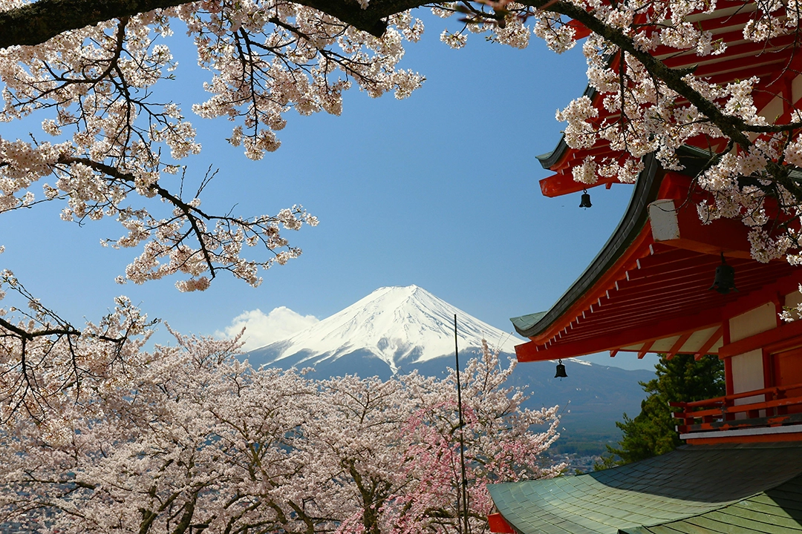

Plan your trip will take care of the rest

At Sakura Traviles our goal isn't a perfect trip it's a journey you'll remember and truly love.
Why choose us
At Sakura Travel, we believe in giving you both a local and tourist experience of Japan. We'll take you to the iconic cities of Kyoto, Tokyo, and Osaka but we also go beyond the usual. Sakura Travel is passionate about showcasing the lesser-known beauty of Japan, including places like Tottori Prefecture and many other hidden gems across the country.
Our Mission
Our mission is to help you experience the full beauty of Japan not just the famous highlights, but also the regions that are often overlooked. We create unique journeys that support and bring attention to these lesser-known prefectures, giving you a deeper and more meaningful connection to Japan.
Experience Offered
Each trip is tailored to the season, so your experience will vary depending on the month you travel.
- Kabuki Theater
- Tea ceremonies
- Hot springs
- climbing mount fuji
- 21+ bar hoping in Shinjuku's Golden Gai
- oing to art museum / local artistent demastraions
- osaka food tour
Participants may choose their preferred level of engagement. We offer both guided and independent tourism options, enabling you to explore and experience Japan in a way that best suits your interests and schedule.
We provide flexible participation options to accommodate varying preferences. Our offerings include both guided and independent tourism experiences, allowing you to discover Japan in a manner aligned with your individual interests and pace.
Frequently Asked Questions
- How do you design and manage travel itineraries?
- Is it possible to customize my trip to match my preferences?
- What guided and independent travel experiences are available?
- How do you design and manage travel itineraries?
- Is it possible to customize my trip to match my preferences?
- What guided and independent travel experiences are available?